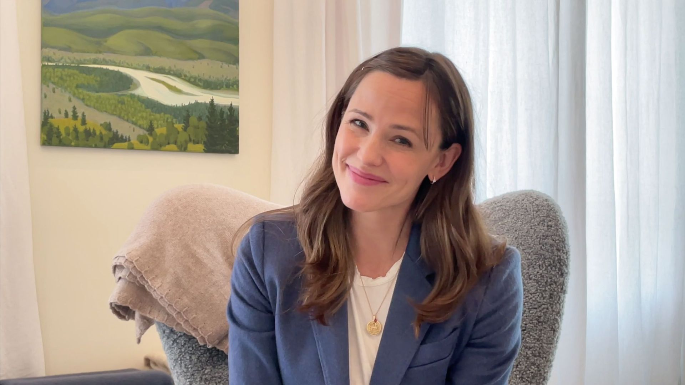

Exclusive: ACLU appeals for migrant reunification on Mother's Day
The ACLU is running an emotional two-page ad in the New York Times this Mother’s Day, urging the Biden administration to go beyond reuniting migrant children and parents separated by President Trump and guarantee them protections to stay in the U.S.
Details: The ad, previewed by Axios, depicts, in red ink, desperate, hand-scrawled fears of separated children against the backdrop of a growth chart.
Driving the news: The administration reunited its first four families this week.Around 400 parents have not been located and roughly a thousand remain separated — some since as far back as 2017.
What they’re saying: 'This Mother’s Day, hundreds of children remain separated from their mothers and thousands of others are suffering from the trauma Trump’s family separation practice inflicted,' Anthony Romero, ACLU executive director, said in a statement.
What we’re watching: Biden’s Family Reunification Task Force is due to release a progress report on June 2.
Posted On: 2021-05-08T00:00:00
Posted By: Stef W. Kight

Content Date: 2021-05-08
Download Date: 2021-05-15
Document ID: L0C04CE09